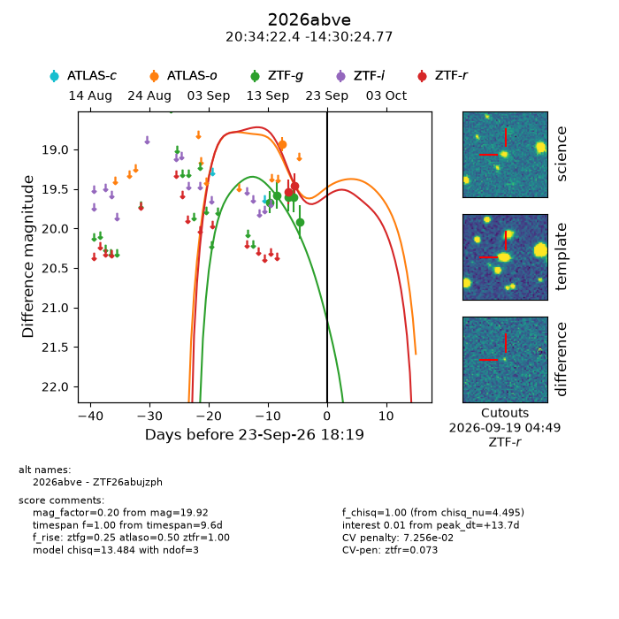
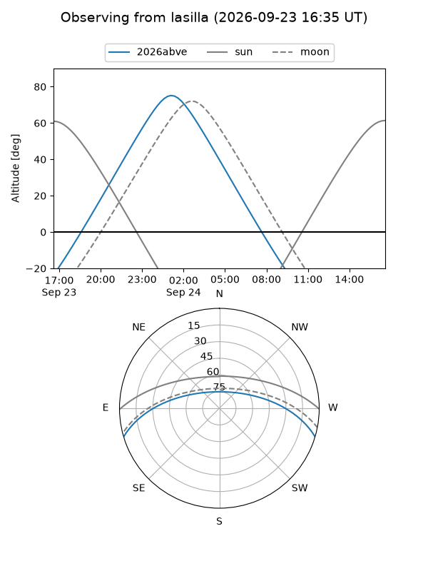
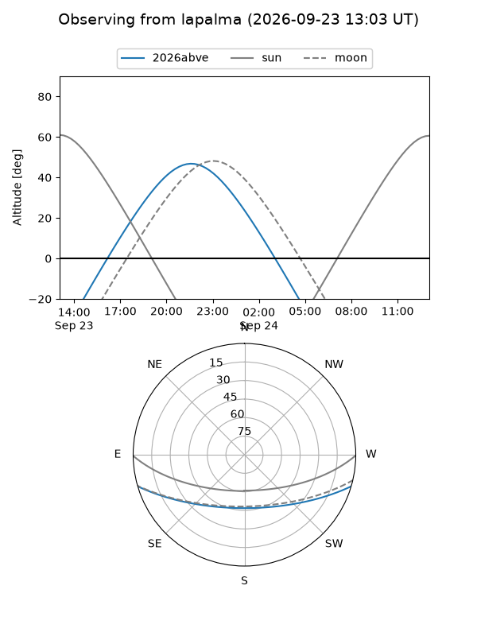
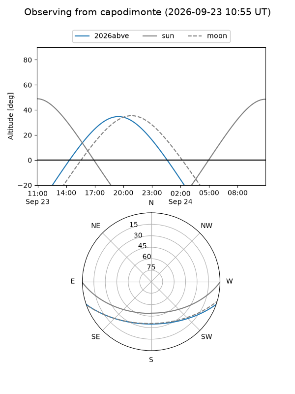
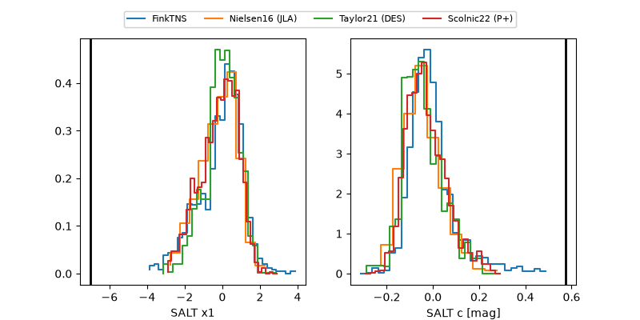

2026abve
Target 2026abve at 2026-09-24 06:16
Aliases and brokers:
FINK-ZTF: ztf.fink-portal.org/ZTF26abujzph
Lasair-ZTF: lasair-ztf.lsst.ac.uk/objects/ZTF26abujzph
ALeRCE-ZTF: alerce.online/object/ZTF26abujzph
YSE-PZ: ziggy.ucolick.org/yse/transient_detail/2026abve
TNS name: wis-tns.org/object/2026abve
Direct TNS query: direct search
alt names
ZTF26abujzph (ztf,fink_ztf)
2026abve (tns,yse)
Coordinates:
equatorial (ra, dec) = 308.5932,-14.50688
equatorial (HMS+DMS) = 20:34:22.38,-14:30:24.77
galactic (l, b) = (30.8786,-29.23062)
Flags:
TNS type: nan
peak dt: +14.2
likely cv: !!
Photometry:
last atlaso=18.94, ztfg=19.92, ztfr=19.46
1 atlaso, 5 ztfg, 2 ztfr detections
Lightcurve

Visibility



Additional plots
